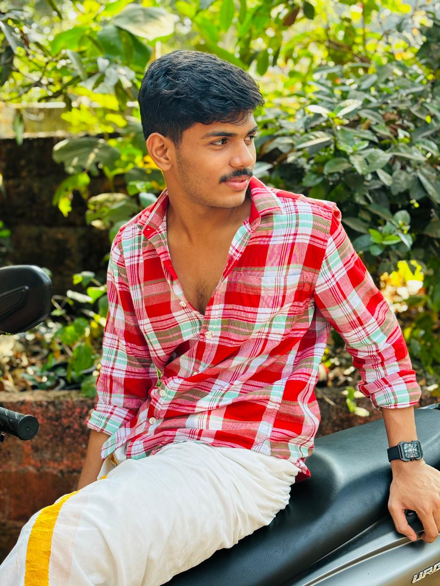

Amrita Vishwa Vidyapeetham, Amritapuri Campus, Kerala
To build a strong foundation in computer science and artificial intelligence, apply my skills to real-world problems, and grow as a responsible and skilled software professional.
| Degree | Institution | Year of Passing | Performance |
|---|---|---|---|
| B.Tech CSE (AI) | Amrita Vishwa Vidyapeetham | 2029 | Ongoing |
| Class XII (CBSE) | M.E.S Public School Pavangad | 2025 | Completed |